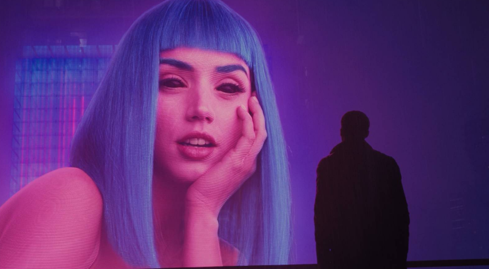
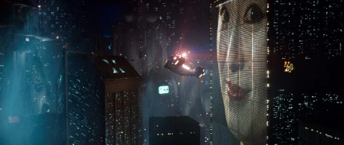
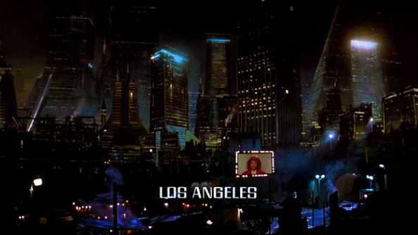

In any form of media, the landscape cannot feel lived in without the art baked into the streets. In many cyberpunk games and media, graffiti and other forms of street art are usually found in the slums of the city — its grunginess highlighting class divide and the disenfranchised. However, a form of art that does not get as much attention is street ads and signs. Whether it be neon lights that invite you into bars and strip clubs, or giant digital billboards that can only be seen by flying cars, signs are everywhere in cyberpunk. Its prominence symbolizes the grasp corporations have on the streets, the sky, and even other planets. No matter where you are, or who you are, they are there.
Well, it seems that the pesky capitalist system found its way through the usage of large and ever-present advertisements and signs. In the cyberpunk movies of Blade Runner and its sequel, Blade Runner 2049, signs and, to be more specific, advertisements are a key motif, with the geisha lady advertisement in the original and the Joi advertisement in the sequel. In the original, the ad continuously plays, spread out throughout the film, representing a domineering presence where, despite the passing story beats, the corporate grip over the people of Los Angeles remains resilient. In a similar sense to the disconnectedness of the ad from the original, Bladerunner 2049's Joi ad hits home with the protagonist K's closest relationship being that of a mass-produced product of the Wallace Corporation. Despite his loss of a being who K felt loved him, he moves on, coming across an advertisement holding a face resembling the one he had just lost. In this moment, the illusion of love drops, and the cold corporate reality rushes in, where the customer in the end becomes the product. In Running Man (1987), the usage of signs is not strictly restricted to the advertisement of products. Instead, giant screens broadcast the game show to the wider population. In this way, the population is geared to focus on the edited game footage, manipulating public perception and normalizing violence as a source of entertainment and an opportunity to gain profits. Only through bright neon lights and striking designs do these signs create a sense of attraction that contrasts the dark landscapes and backgrounds of the pieces of media portrayed, yet the implementation of this concept is not simply a work of fiction.


